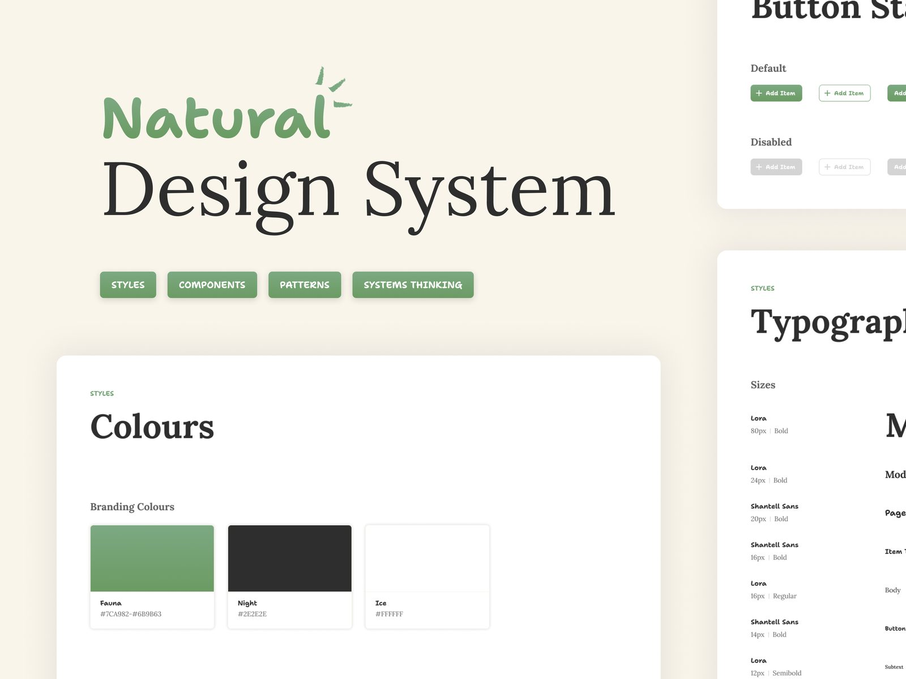
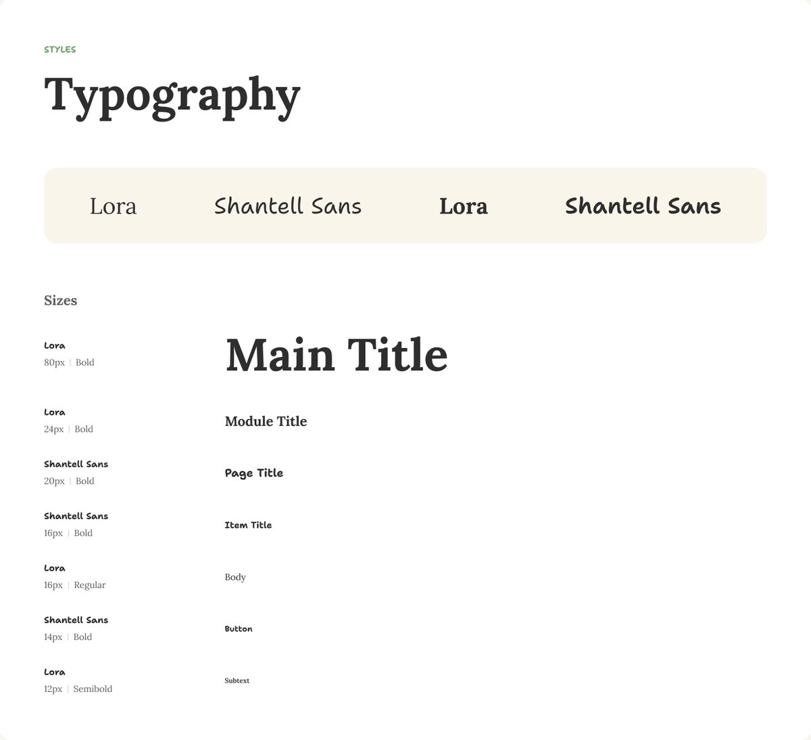
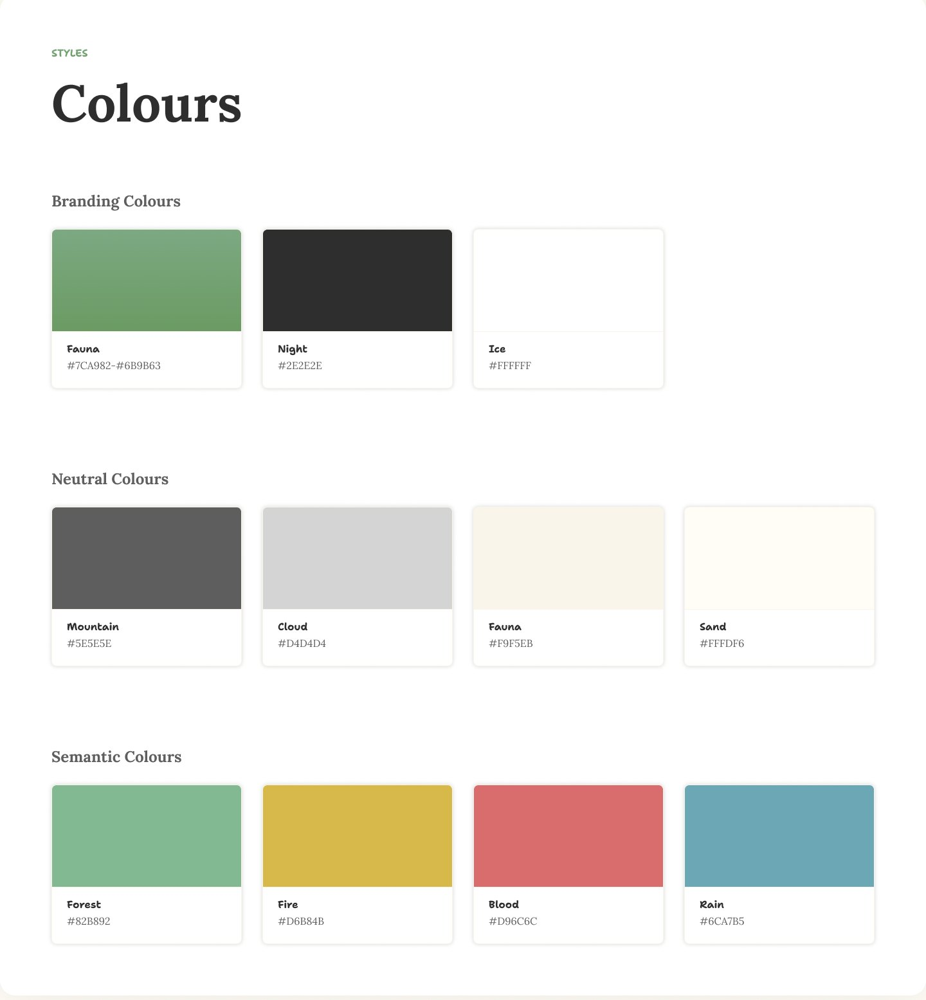
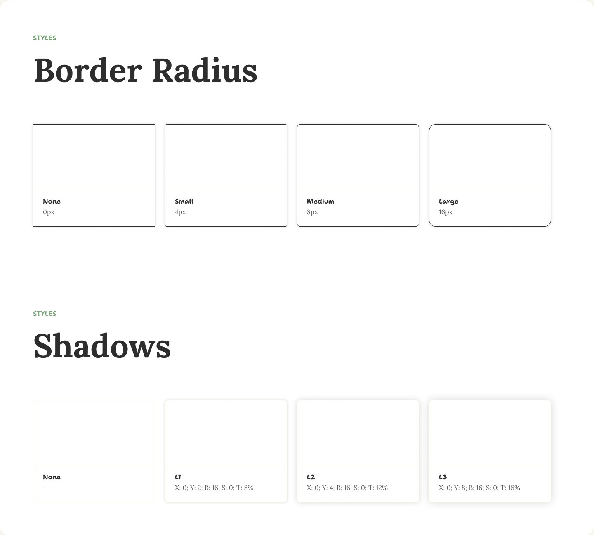
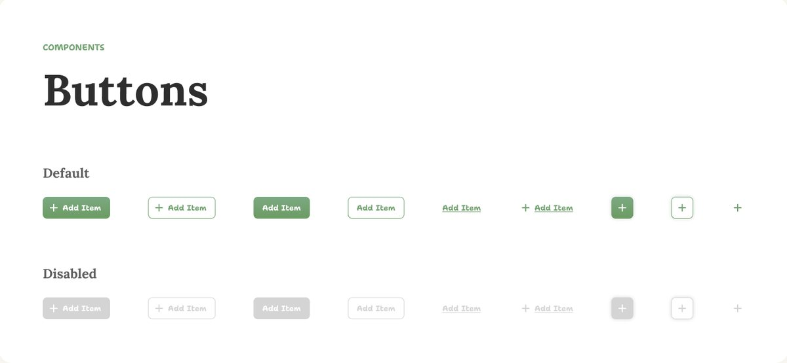
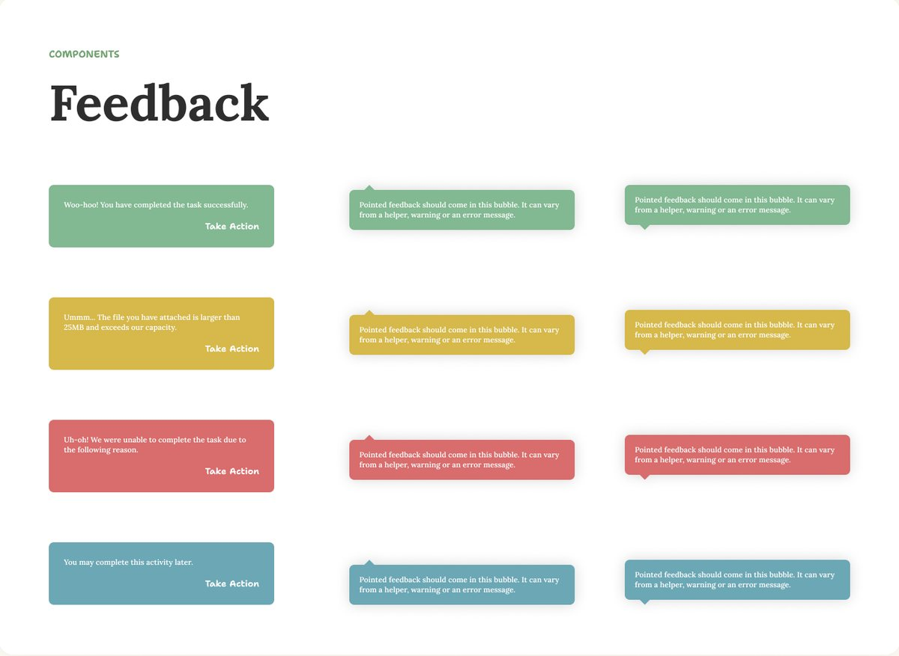
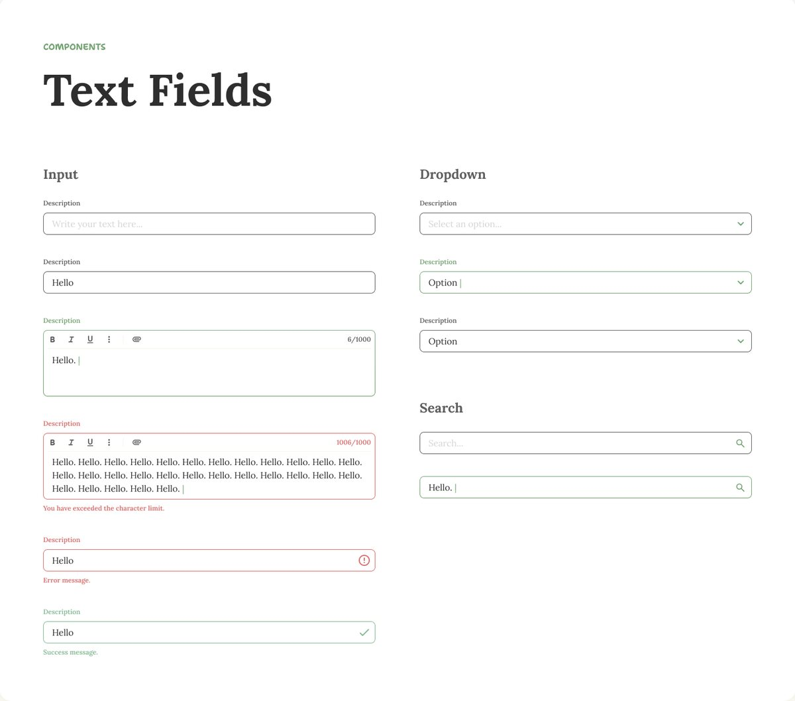
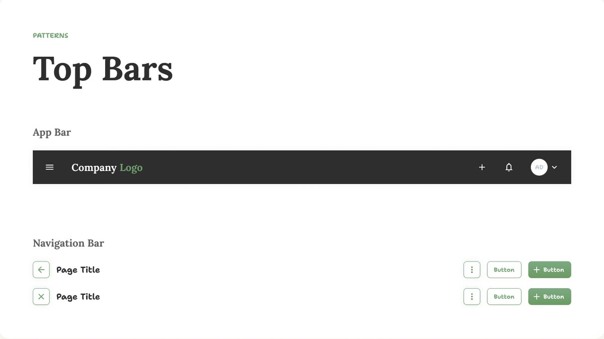
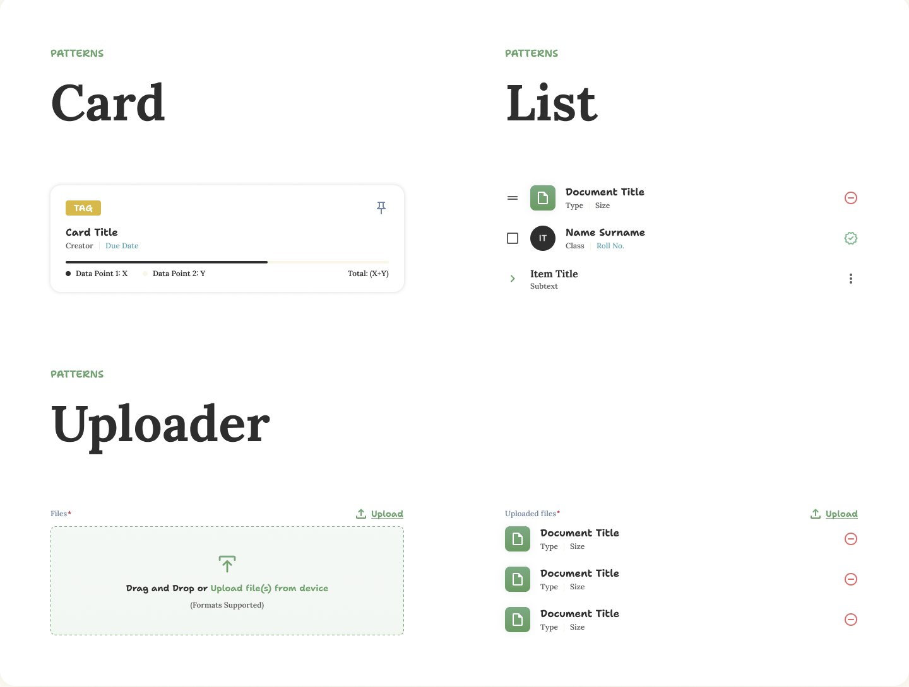
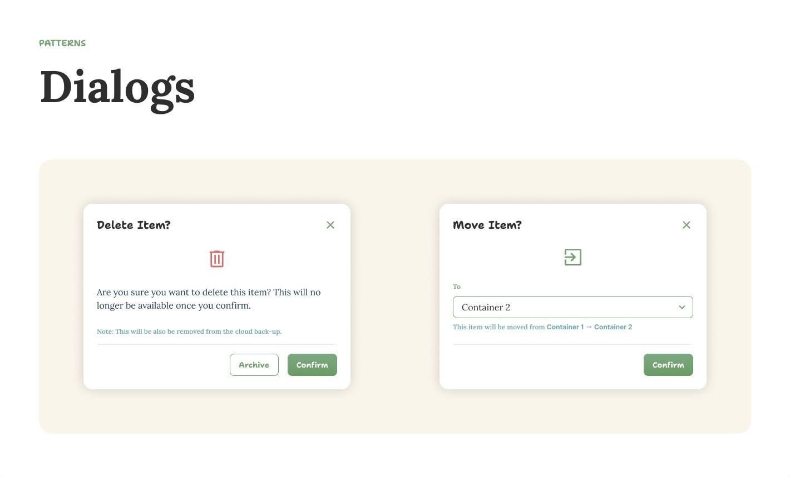

- Version 1
- Design system
Natural Design System v1
Where my design system began: a consistent set of styles, components and patterns that sped up decisions and made developer handoff painless.

Overview
Why I built it
Every new screen meant the same small decisions again: which green, which size, how round, what a disabled button looks like. Answers drifted from file to file, and the product started to look stitched together.
I wanted those decisions made once, written down and reused, so I could spend my time on the problem instead of the pixels.
Consistency
One source for colour, type and components, so every feature looks and behaves like the same product.
Speed
Fewer repeated decisions. Changes to a core component flow everywhere it is used.
Smoother handoff
Named tokens and components gave developers a shared language and cut the back-and-forth.
Approach
Small pieces first
I built it from the bottom up: styles first, then components made from those styles, then patterns made from components. Each colour is named after something in nature, like Fauna, Forest, Rain and Sand, which made the palette easy to remember and gave the system its name.
Version one was deliberately simple. It covered what my everyday work needed, and what I learned from using it shaped Naturalé, version two.
Styles
The foundations
Type, colour, radius and depth, defined once and reused everywhere.



Components
Building blocks



Patterns
Components working together


